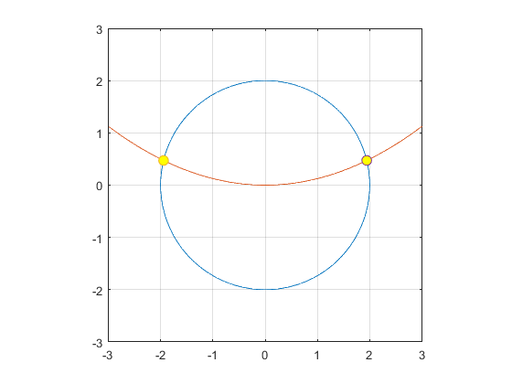
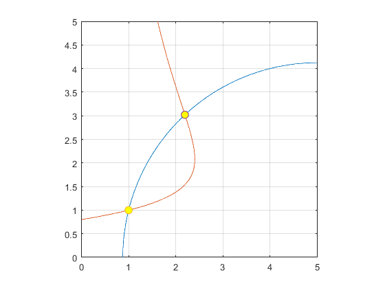
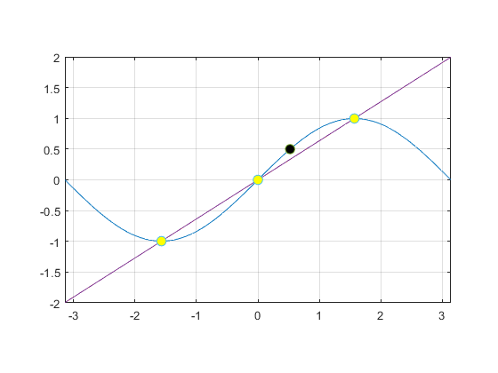
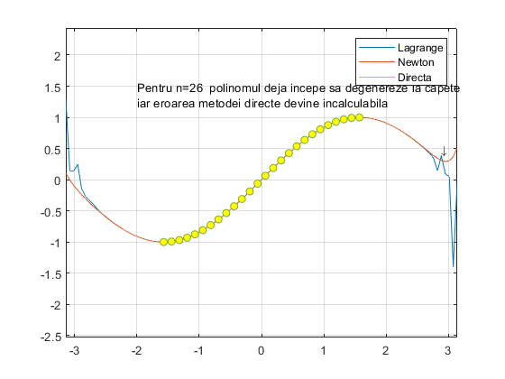

Contents
Exercitiul 1
syms x y;
f=x.^2+y.^2-4;
g=x.^2/8-y;
J=[diff(f1,x),diff(f1,y);diff(f2,x),diff(f2,y)];
fprintf('Jacobianul: ');
J
f=matlabFunction(f,'vars',{x,y});
g=matlabFunction(g,'vars',{x,y});
figure(1);
fimplicit(f,[-3,3,-3,3])
hold on
grid on
fimplicit(g,[-3,3,-3,3])
axis equal
eps=10^(-6);
F=@(x,y) [f(x,y);g(x,y)];
J=matlabFunction(J,'vars',{x,y});
x0=[-2;0];
[xaprox,N]=MetNewton(F,J,x0,eps);
xaprox
plot(xaprox(1),xaprox(2),'o','MarkerSize',8,'MarkerFaceColor','y');
grid on
hold on
x0=[2;0];
[xaprox,N]=MetNewton(F,J,x0,eps);
xaprox
plot(xaprox(1),xaprox(2),'o','MarkerSize',8,'MarkerFaceColor','y');
Jacobianul:
J =
[ 2*x, y/2]
[ x/4, -1]

Exercitiul 2
syms x1 x2
f=x1.^2-10.*x1+x2.^2+8;
g=x1.*x2.^2+x1-10.*x2+8;
J=[diff(f,x1),diff(f,x2);diff(g,x1),diff(g,x2)];
fprintf('Jacobianul: ');
J
f=matlabFunction(f,'vars',{x1,x2});
g=matlabFunction(g,'vars',{x1,x2});
figure(2);
fimplicit(f,[0,5,0,5])
hold on
grid on
fimplicit(g,[0,5,0,5])
axis equal
eps=10^(-6);
F=@(x1,x2) [f(x1,x2);g(x1,x2)];
J=matlabFunction(J,'vars',{x1,x2});
x0=[0;0];
[xaprox,N]=MetNewton(F,J,x0,eps);
xaprox
plot(xaprox(1),xaprox(2),'o','MarkerSize',8,'MarkerFaceColor','y');
grid on
hold on
x0=[3;2];
[xaprox,N]=MetNewton(F,J,x0,eps);
xaprox
plot(xaprox(1),xaprox(2),'o','MarkerSize',8,'MarkerFaceColor','y');
Jacobianul:
J =
[ 2*x1 - 10, 2*x2]
[ x2^2 + 1, 2*x1*x2 - 10]
xaprox =
1.0000
1.0000
xaprox =
2.1934
3.0205

Exercitiul 3
f=@(x)sin(x);
x=linspace(-pi/2,pi/2,3);
y=f(x);
y=y';
figure(3);
fplot(f,[-pi,pi]);
hold on
grid on
axis equal
fprintf( 'Prin metoda directa\n');
a = MetDirecta(x,y);
a
syms X;
Pn = 0;
for i=1:length(a)
Pn = Pn + a(i)*X^(i-1);
end
Pn
Pn = matlabFunction(Pn, 'vars', X);
fprintf('|Pn(pi/6) - f(pi/6)|=');
abs(Pn(pi/6) - f(pi/6))
fplot(Pn,[-pi,pi]);
fprintf( 'Prin metoda Lagrange\n');
fprintf( '|Pn(pi/6) - f(pi/6)|=');
abs(MetLagrange(x,y,[pi/6]) - f(pi/6))
plot(linspace(-pi,pi,100), MetLagrange(x,y,linspace(-pi,pi,100)));
fprintf( 'Prin metoda Newton\n');
fprintf( '|Pn(pi/6) - f(pi/6)|=');
abs(MetNewtonDetPol(x,y,[pi/6]) - f(pi/6))
plot(linspace(-pi,pi,100), MetNewtonDetPol(x,y,linspace(-pi,pi,100)));
plot(pi/6, f(pi/6), 'o','MarkerSize', 8, 'MarkerFaceColor', 'k');
plot(x, y, 'o', 'MarkerSize', 8,'MarkerFaceColor', 'y');
Prin metoda directa
a =
0 0.6366 0
Pn =
(5734161139222659*X)/9007199254740992
|Pn(pi/6) - f(pi/6)|=
ans =
0.1667
Prin metoda Lagrange
|Pn(pi/6) - f(pi/6)|=
ans =
0.1667
Prin metoda Newton
|Pn(pi/6) - f(pi/6)|=
ans =
0.1667

Exercitiul 4
f = @(x)sin(x);
n = 26;
x = linspace(-pi/2,pi/2,n);
y = f(x);
y = y';
figure(4);
fprintf( 'Prin metoda Lagrange\n');
fprintf( '|Pn(pi/6) - f(pi/6)|=');
abs(MetLagrange(x,y,[pi/6]) - f(pi/6))
plot(linspace(-pi,pi,100), MetLagrange(x,y,linspace(-pi,pi,100)));
hold on;
grid on;
axis equal;
fprintf( 'Prin metoda Newton\n');
fprintf( '|Pn(pi/6) - f(pi/6)|=');
abs(MetNewtonDetPol(x,y,[pi/6]) - f(pi/6))
plot(linspace(-pi,pi,100), MetNewtonDetPol(x,y,linspace(-pi,pi,100)));
fprintf( 'Prin metoda directa\n');
fprintf( '|Pn(pi/6) - f(pi/6)|= ');
abs(MetDirectaEx4(x,y,[pi/6]) - f(pi/6))
plot(linspace(-pi,pi,100), MetDirectaEx4(x,y,linspace(-pi,pi,100)));
plot(x, y, 'o', 'MarkerSize', 6,'MarkerFaceColor', 'y' );
legend('Lagrange', 'Newton', 'Directa');
txt='Pentru n=26 polinomul deja incepe sa degenereze la capete';
text(-2,1.5,txt);
txt2='\downarrow';
text(2.888,0.5,txt2);
txt='iar eroarea metodei directe devine incalculabila';
text(-2,1.25,txt);
hold off;
Prin metoda Lagrange
|Pn(pi/6) - f(pi/6)|=
ans =
3.8858e-16
Prin metoda Newton
|Pn(pi/6) - f(pi/6)|=
ans =
6.1062e-16
Prin metoda directa
|Pn(pi/6) - f(pi/6)|=
ans =
NaN

Algoritmii functiilor
function [xaprox,N]=MetNewton(F,J,x0,eps)
k=1;
x(:,k)=x0;
while true
k=k+1;
z=J(x(1,k-1),x(2,k-1))\(-F(x(1,k-1),x(2,k-1)));
x(:,k)=x(:,k-1)+z;
if norm(z,2)<eps
break;
end
end
xaprox=x(:,k);
N=k;
end
function [a]=MetDirecta(x,y)
n=length(x)-1;
for i=1:n+1
A(i,1)=1;
end
for i=1:n+1
for j=2:n+1
A(i,j)=x(i)^(j-1);
end
end
a=GaussPivTot(A,y);
end
function [y] = MetLagrange(X, Y, x)
syms variabila;
n = length(X);
Pn = 0;
for k=1:n
Lnk = 1;
for i=1:n
if i==k
continue
end
Lnk = Lnk * (variabila-X(i)) / (X(k)-X(i));
end
Pn = Pn + Lnk*Y(k);
end
Pn = matlabFunction(Pn, 'vars', variabila);
y = Pn(x);
end
function [y] = MetNewtonDetPol(X, Y, x)
syms variabila;
n = length(X);
Pn = 0;
for i=1:n
for j=1:n
if j==1
A(i,j)=1;
elseif j>i
A(i,j)=0;
else
prod = 1;
for k=1:j-1
prod = prod * (X(i)-X(k));
end
A(i,j) = prod;
end
end
end
c = SubsAsc(A, Y');
for i=1:n-1
coeficient = c(i);
for k=1:i-1
coeficient = coeficient * (variabila - X(k));
end
Pn = Pn + coeficient;
end
Pn = matlabFunction(Pn, 'vars', variabila);
y = Pn(x);
end
function [x] = SubsAsc(A,b)
n = length(b);
x(1) = 1/A(1,1) * b(1);
k=1;
for k=2:n-1
sum = 0;
for j=1:k-1
sum=sum + A(k,j)*x(j);
end
x(k) = 1/A(k,k)*(b(k) - sum);
end
end
function [x] = GaussPivTot(A,b)
n=length(b);
index=1:n;
A=[A,b];
for k=1:n-1
max = abs(A(k,k));
for i=k:n
for j=k:n
if abs(A(i,j)) > max
max = abs(A(i,j));
p=i;
m=j;
end
end
end
if(max==0)
fprintf('Sistem incompatibil sau nedeterminat');
x='error';
return;
end
if p~=k
A([p,k], :) = A([k,p], :);
end
if m~=k
A(:, [m,k]) = A (:, [k,m]);
index([m,k])=index([k,m]);
end
for l=k+1:n
mlk = A(l,k)/A(k,k);
A(l,:) = A(l,:) - mlk*A(k,:);
end
end
if A(n,n) == 0
fprintf('Sistem incompatibil sau nedeterminat');
x='error';
return;
end
y = SubsDesc(A(1:n, 1:n), A(:, n+1));
for i=1:n
x(index(i)) = y(i);
end
end
function [x] = SubsDesc(A,b)
n = length(b);
x(n) = 1/A(n,n) * b(n);
k = n - 1;
while k>0
sum=0;
for j=k+1:n
sum = sum + A(k,j)*x(j);
end
x(k) = 1/A(k,k) * (b(k) - sum);
k=k-1;
end
end
function [y] = MetDirectaEx4(X, Y, x)
syms variabila;
n = length(X);
for i=1:n
A(i,1)=1;
end
for i=1:n
for j=2:n
A(i,j) = X(i)^(j-1);
end
end
a = GaussPivTot(A, Y);
Pn = 0;
for i=1:length(a)
Pn = Pn + a(i)*variabila^(i-1);
end
Pn = matlabFunction(Pn, 'vars', variabila);
y = Pn(x);
end
xaprox =
-1.9435
0.4721
xaprox =
1.9435
0.4721